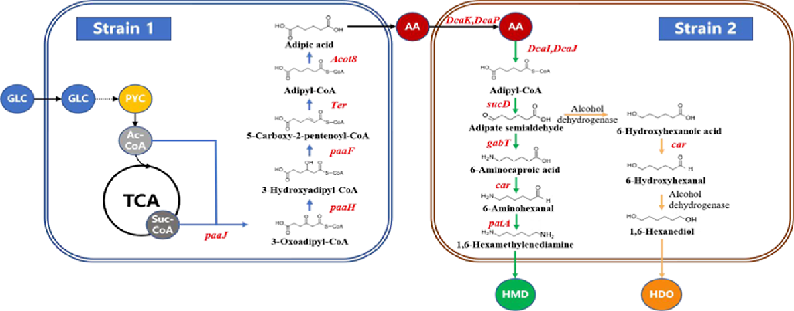
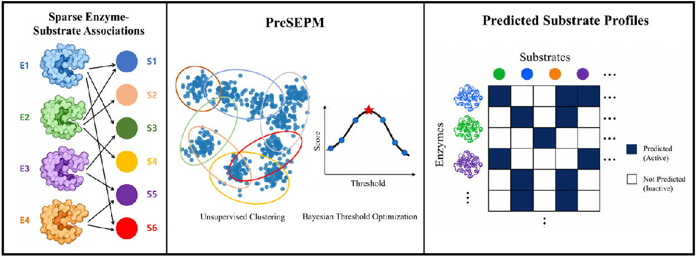
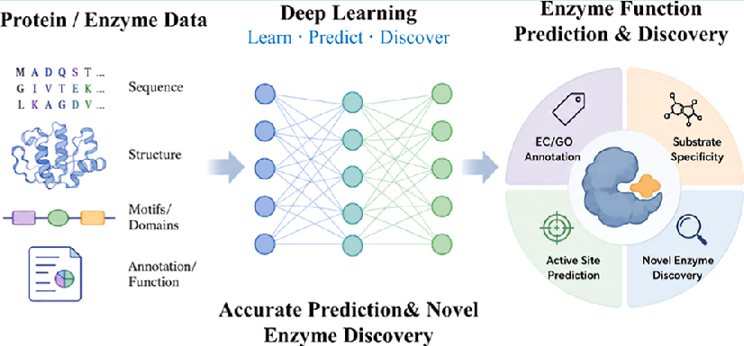

PUBLICATIONS
论文成果
按出版年份浏览研究论文、综述、书章与会议成果。
Selected papers
代表性论文


期刊影响因子取 ACS 公布的 2025 年数据。文章被引次数取 OpenAlex 页面快照（2026-11-06 查阅）。
Publications
完整书目
共 62 条成果
PUBLICATIONS
按出版年份浏览研究论文、综述、书章与会议成果。
Selected papers



期刊影响因子取 ACS 公布的 2025 年数据。文章被引次数取 OpenAlex 页面快照（2026-11-06 查阅）。
Publications
共 62 条成果